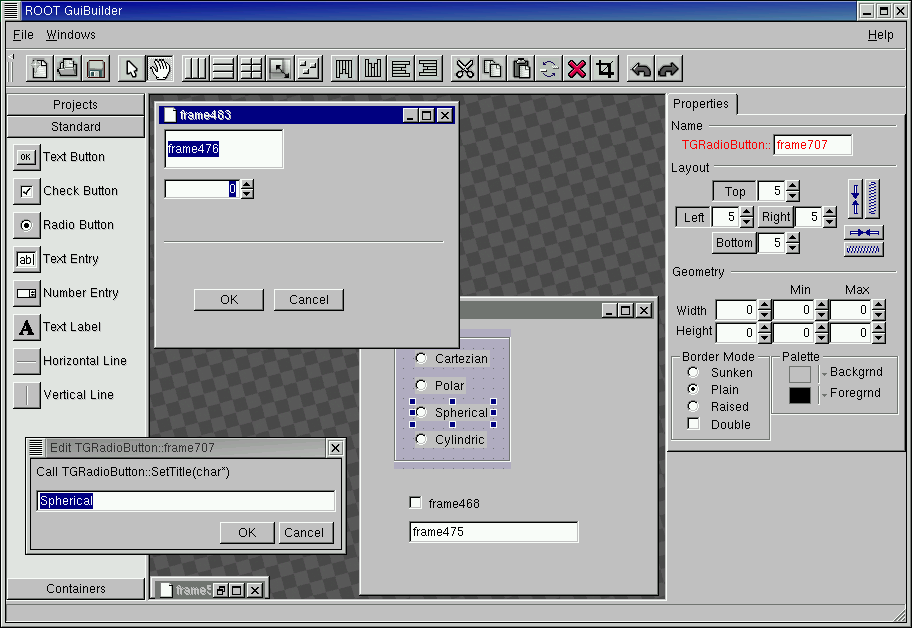

TGuiBuilder
ROOT GUI Builder principles
With the GUI builder, we try to make the next step from WYSIWYG
to embedded editing concept - WYSIWYE ("what you see is what you edit").
The ROOT GUI Builder allows modifying real GUI objects.
For example, one can edit the existing GUI application created by
$ROOTSYS/tutorials/gui/guitest.C.
GUI components can be added to a design area from a widget palette,
or can be borrowed from another application.
One can drag and and drop TCanvas's menu bar into the application.
GUI objects can be resized and dragged, copied and pasted.
ROOT GUI Builder allows changing the layout, snap to grid, change object's
layout order via the GUI Builder toolbar, or by options in the right-click
context menus.
A final design can be immediatly tested and used, or saved as a C++ macro.
For example, it's possible to rearrange buttons in control bar,
add separators etc. and continue to use a new fancy control bar in the
application.
The following is a short description of the GUI Builder actions and key shortcuts:
o Press Ctrl-Double-Click to start/stop edit mode
o Press Double-Click to activate quick edit action (defined in root.mimes)
Selection, grabbing, dropping
It is possible to select, drag any frame and drop it to any frame
o Click left mouse button or Ctrl-Click to select an object to edit.
o Press right mouse button to activate context menu
o Mutiple selection (grabbing):
- draw lasso and press Return key
- press Shift key and draw lasso
o Dropping:
- select frame and press Ctrl-Return key
o Changing layout order:
- select frame and use arrow keys to change layout order
o Alignment:
- draw lasso and press arrow keys (or Shift-Arrow key) to align frames
Key shortcuts
o Return - grab selected frames
o Ctrl-Return - drop frames
o Del - delete selected frame
o Shift-Del - crop action
o Ctrl-X - cut action
o Ctrl-C - copy action
o Ctrl-V - paste action
o Ctrl-R - replace action
o Ctrl-L - compact layout
o Ctrl-B - break layout
o Ctrl-H - switch horizontal-vertical layout
o Ctrl-G - switch on/off grid
o Ctrl-S - save action
o Ctrl-O - open and execute a ROOT macro file. GUI components created
after macro execution will be emebedded to currently edited
design area.
o Ctrl-N - create new main frame
/*

*/
{kind=link}
{kind=link}
{kind=link}
{kind=link}